종자산업기사 (2019-03-03 기출문제)
1과목: 종자생산학 및 종자법규
1. 유한화서 중에서 가장 간단한 것으로 줄기의 맨 끝에서 1개의 꽃이 피는 것은?
- 총상화서
- 원추화서
- 단정화서
- 유이화서
(정답률: 70%)

2. 다음에서 설명하는 것은?
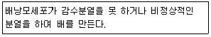
- 부정배생식
- 무포자생식
- 복상포자생식
- 웅성단위생식
(정답률: 57%)
3. 메밀이나 해바라기와 같이 종자가 과피의 어느 한 줄에 붙어 있어 열 개하지 않는 것을 무엇이라 하는가?
- 이과
- 핵과
- 감과
- 수과
(정답률: 66%)
4. 종자관련법상 종자업을 하려는 자는 종자 관리사를 몇 명 이상 두어야 하는가? (단, 대통령령으로 정하는 작물의 종자를 생산, 판매하려는 자의 경우는 제외)
- 1명
- 2명
- 3명
- 4명
(정답률: 78%)
5. 다음 중 안전저장을 위해 종자의 최대 수분함량의 한계에서 '종자의 최대 수분함량'이 가장 높은 것은?
- 토마토
- 보리
- 배추
- 고추
(정답률: 50%)
6. 다음 중 수분의 측정에서 저온항온건조기법을 사용하게 되는 것은?
- 근대
- 당근
- 완두
- 마늘
(정답률: 58%)
7. 다음에서 설명하는 것은?
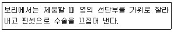
- 개열법
- 화판인발법
- 절영법
- 페탈 스플릿법
(정답률: 70%)
8. 씨없는 수박의 종자 생산을 위한 교잡법은?
- 2배체(♀) x 2배채(♂)
- 4배체(♀) x 2배체(♂)
- 3배체(♀) x 2배체(♂)
- 4배체(♀) x 4배체(♂)
(정답률: 71%)
9. 교배에 앞서 제웅이 필요 없는 작물로만 나열된 것은?
- 벼, 귀리
- 오이, 호박
- 수수, 토마토
- 가지, 멜론
(정답률: 68%)
10. 다음 설명에 해당되는 것은?
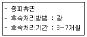
- 벼
- 밀
- 보리
- 야생귀리
(정답률: 63%)
11. 화훼 구근류 포장검사의 검사규격에 대한 내용이다. (가)에 알맞은 내용은?
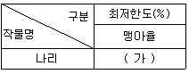
- 60
- 65
- 75
- 85
(정답률: 45%)
12. 다음에 해당되는 것으로만 나열된 것은?
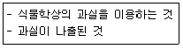
- 밀, 옥수수
- 벼, 겉보리
- 복숭아, 자두
- 귀리, 고사리
(정답률: 54%)
13. 채소작물의 포장검사에 대한 내용이다. (가)에 알맞은 내용은?
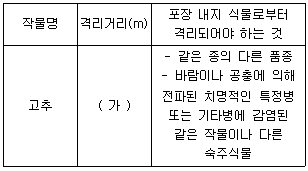
- 300
- 500
- 800
- 1000
(정답률: 55%)
14. 제(臍)가 종자의 끝에 있는 것에 해당하는 것으로만 나열된 것은?
- 배추, 시금치
- 상추, 고추
- 콩, 메밀
- 쑥갓, 목화
(정답률: 49%)
15. 녹두의 순도검사 시 시료의 최소 중량은?
- 80g
- 100g
- 120g
- 150g
(정답률: 48%)
16. ( )에 알맞은 내용은?
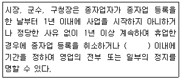
- 3개월
- 6개월
- 1년
- 2년
(정답률: 64%)
17. 종자관련법상 국가보증이나 자체보증을 받은 종자를 생산하려는 자는 농림축산식품부 장관 또는 종자관리사로부터 채종 단계별로 몇 회 이상 포장(圃場)검사를 받아야 하는가?
- 1회
- 2회
- 3회
- 4회
(정답률: 75%)
18. ( )에 알맞은 내용은?
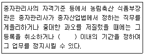
- 6개월
- 1년
- 2년
- 3년
(정답률: 61%)
19. ( 가 )에 알맞은 내용은?
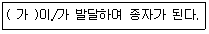
- 배주
- 에피스네이스
- 주공
- 주피
(정답률: 81%)
20. 녹식물춘화형 식물에 해당하는 것은?
- 무
- 순무
- 유채
- 양배추
(정답률: 63%)
2과목: 식물육종학
21. 다음 중 콜히친의 기능을 가장 바르게 설명한 것은?
- 세포 융합을 시켜 염색체 수가 배가된다.
- 세포막을 통하여 인근 세포의 염색체를 이동, 복제 시킨다.
- 분열 중이 아닌 세포의 염색체를 분할시킨다.
- 분열 중인 세포의 방추사와 세포막의 형성을 억제한다.
(정답률: 67%)
22. 다음 교배조합 중 복교배에 해당하는 것은?
- (AxM)x(BxM)x(CxM)x(DxM)
- (AxB)x(CxD)
- AxB
- (AxB)xB
(정답률: 78%)
23. 3염색체식물의 염색체 수를 표기하는 방법으로 가장 옳은 것은?
- 3n+3
- 3n+2
- 2n+1
- 2n-1
(정답률: 79%)
24. 식량작물의 종자갱시체계로 가장 옳게 나열된 것은?
- 원원종 → 원종 → 보급종 → 기본종
- 보급종 → 원종 → 원원종 → 기본종
- 기본종 → 원원종 → 원종 → 보급종
- 원종 → 원원종 → 기본종 → 보급종
(정답률: 82%)
25. 세 가지 단성잡종의 분리비가 각각 3:1인 삼성잡종교배(AABBCC x aabbcc)에서 F2유전자형 A_bbcc의 기대 분리비는 얼마인가? (단, A는 a에 대하여 우성, B는 b에 대하여 우성, C는 c에 대하여 우성이다.
- 27/64
- 9/64
- 6/64
- 3/64
(정답률: 40%)
26. 연속 여교잡한 BC3F1에서 반복친의 유전구성을 회복 하는 비율에 가장 가까운 것은?
- 약 75%
- 약 87%
- 약 93%
- 100%
(정답률: 49%)
27. 멘델의 법칙에서 이형접합체(WwGg)를 열성친(wwgg)과 검정교배 하였을 때 ㅍ현형의 분리비로 가장 적절한 것은?
- 1:1:1:1
- 4:3:2:1
- 4:1:1:1
- 9:6:3:1
(정답률: 58%)
28. 단성잡종(AA x aa)의 F1을 자식시킨 F2집단과 F1에 열성친(aa)을 반복친으로 1회 여교잡한 집단의 동형집합체 비율은?
- 두 집단 모두 25%이다.
- 두 집단 모두 50%이다.
- F2 집단은 25%이고 여교잡 집단은 50%이다.
- F2 집단은 50%이고 여교잡 집단은 25%이다.
(정답률: 56%)
29. 복이배체의 게놈을 가장 바르게 표현한 것은?
- AA
- ABC
- AABB
- AAAA
(정답률: 82%)
30. 다음 중 유전자지도 작성의 기초가 되는 유전현상으로 가장 옳은 것은?
- 유전자 분리
- 염색체 배가 및 복제
- 연관과 교차
- 비대립 유전자의 상위성
(정답률: 53%)
31. 잡종강세 육종에서 유전자형이 다른 자식계통들을 모두 상호교배하여 함께 검정하는 방법은?
- 단교배검정법
- 톰교배검정법
- 이면교배분석법
- 다교배검정법
(정답률: 41%)
32. 다음 중 신품종의 3대 구비조건에 가장 해당하지 않은 것은?
- 안정성
- 다양성
- 구별성
- 균일성
(정답률: 74%)
33. 아조변이에 대한 설명으로 가장 적절한 것은?
- 체세포의 돌연변이로서 영양번식 작물에 주로 이용되는 것
- 체세포의 돌연변이로서 유성번식 작물에 주로 이용되는 것
- 생식세포의 돌연변이로서 영양번식 작물에 주로 이용되는 것
- 생식세포의 돌연변이로서 유성번식 작물에 주로 이용되는 것
(정답률: 61%)
34. 3배체 수박의 채종법으로 가장 옳은 것은?
- 2n(♀) x 3n(♂)
- 3n(♀) x 3n(♂)
- 4n(♀) x 2n(♂)
- 5n(♀) x 2n(♂)
(정답률: 71%)
35. ( )에 가장 알맞은 내용은?
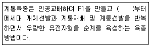
- F2
- F3
- F4
- F6
(정답률: 77%)
36. 일반적으로 1세대당 1유전자에 일어나는 자연 돌연변이의 출현 빈도로 가장 옳은 것은?
- 10-10 ~ 10-9
- 10-6 ~ 10-5
- 10-3 ~ 10-2
- 10-1
(정답률: 71%)
37. 다음 중 이종(異種) 게놈으로 된 이질배수체는?
- 배추
- 양배추
- 고추
- 유채
(정답률: 58%)
38. 배낭을 만들지만 배낭의 조직세포가 배를 형성하는 것은?
- 복상포자생식
- 위수정생식
- 웅성단위생식
- 무포자생식
(정답률: 32%)
39. 합성품종의 설명으로 가장 옳지 않은 것은?
- 집단의 유전평형 원리가 적용된다.
- 반영구적으로 사용된다.
- 채종방법이 복잡하다.
- 환경변동에 대한 안정성이 높다.
(정답률: 48%)
40. Apomixis를 가장 바르게 설명한 것은?
- 수정 없이 종자가 생기는 현상이다.
- 종자 없이 과일이 생기는 현상이다.
- 염색체가 배가 되는 현상이다.
- 체세포에 일어나는 돌연변이다.
(정답률: 69%)
3과목: 재배원론
41. 수해를 입은 뒤 사후 대책에 대한 설명으로 틀린 것은?
- 물이 빠진 직후 덧거름을 준다.
- 철저한 병해충 방제 노력이 있어야 한다.
- 퇴수 후 새로운 물을 갈아 댄다.
- 짚을 매어 토양 표면의 흙 앙금을 헤쳐준다.
(정답률: 61%)
42. 다음 중 식물의 이층 형성을 촉진하여 낙엽에 영향을 주는 것은?
- ABA
- IBA
- CCC
- MH
(정답률: 63%)
43. 내건성 작물의 특성으로 옳은 것은?
- 세초액의 삼투압이 낮다.
- 원형질의 점성이 높다.
- 원형질막의 수분투과성이 작다.
- 기공이 크다.
(정답률: 53%)
44. 내동성에 대한 설명으로 옳은 것은?
- 생식기관은 영양기관보다 내동성이 강하다.
- 휴면아는 내동성이 극히 약하다.
- 저온 처리를 해서 맥류의 추파성을 소거하면 생식 생장이 유도되어 내동성이 약해진다.
- 직립성인 것이 포복성인 것보다 내동성이 강하다.
(정답률: 58%)
45. 감자의 휴면 타파를 위하여 흔히 사용하는 물질은?
- 질산염
- ABA
- 지베렐린
- 과산화수소
(정답률: 74%)
46. 다음에서 설명하는 것은?
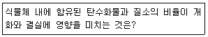
- 일장효과
- G/D균형
- C/N율
- T/R율
(정답률: 81%)
47. C4 식물로만 나열된 것은?
- 벼, 보리, 수수
- 벼, 기장, 버뮤다그라스
- 보리, 옥수수, 해바라기
- 옥수수, 사탕수수, 기장
(정답률: 70%)
48. 일장 효과에 가장 큰 영향을 주는 광 파장은?
- 200~300mm
- 400~500mm
- 600~800mm
- 800~900mm
(정답률: 67%)
49. 식물체에서 내열성이 가장 강한 부위는?
- 주피
- 눈
- 유엽
- 중심주
(정답률: 60%)
50. 당료작물에 해당하는 것은?
- 옥수수
- 고구마
- 감자
- 사탕수수
(정답률: 81%)
51. 작물이 자연적으로 분화하는 첫 과정으로 옳은 것은?
- 도태와 적응
- 지리적 격절
- 유전적 교섭
- 유전적 변이
(정답률: 51%)
52. 자식성 식물로만 나열된 것은?
- 양파, 감
- 호두, 수박
- 마늘, 샐러리
- 대두, 완두
(정답률: 59%)
53. 엽면시비가 필요한 경우가 아닌 것은?
- 토양시비가 곤란한 경우
- 급속한 영양 회복이 필요한 경우
- 뿌리의 흡수력이 약해졌을 경우
- 다량 요소의 공급이 필요한 경우
(정답률: 68%)
54. 작물의 습해 대책으로 틀린 것은?
- 습답에서는 휴립재배한다.
- 황산근 비료의 시용을 피한다.
- 미숙유기물을 다량 시용하여 입단을 조성한다.
- 과산화석회를 시용하고 파종한다.
(정답률: 55%)
55. 생리작용 중 광과 관련이 적은 것은?
- 굴광현상
- 일비현상
- 광합성
- 착색
(정답률: 68%)
56. 벼가 수온이 높고 정체된 흐린 물에 침관수되어 급속히 죽게 될 때의 상태는?
- 청고
- 적고
- 황화
- 백수
(정답률: 57%)
57. 윤작, 춘경과 같이 잡초의 경합력이 저하되도록 재배관리 해 주는 방제법은?
- 물리적 방제법
- 생물적 방제법
- 생태적, 경종적 방제법
- 화학적 방제법
(정답률: 74%)
58. 단위면적당 광합성 능력을 표시하는 것은?
- 재식 밀도 x 수광 태세 x 평균 동화 능력
- 재식 밀도 x 엽먼적률 x 순동화율
- 총 엽면적 x 수광 능률 x 평균 동화 능력
- 엽면적률 x 수광 태세 x 순동화율
(정답률: 54%)
59. 벼 키다리병에서 유래되었으며 세포의 신장을 촉진하는 식물 생장 조절제는?
- 지베렐린
- 옥신
- ABA
- 에틸렌
(정답률: 71%)
60. 벼 종자 선종 방법으로 염수선을 하고자 한다. 비중을 1.13으로 할 경우, 물 18L에 드는 소금의 분량은?
- 3.0kg
- 4.5kg
- 6.0kg
- 7.5kg
(정답률: 44%)
4과목: 식물보호학
61. 잡초로 인한 피해로 옳지 않는 것은?
- 작물에 기생
- 작물과 경쟁
- 토양 침식 가속화
- 병충해 매개 역할
(정답률: 69%)
62. 잡초의 식생 천이에 관여하는 요인으로 옳지 않은 것은?
- 물 관리
- 시비 방법
- 작부체계 변화
- 비선택성 제초제 시용
(정답률: 47%)
63. 석회황합제에 해당하는 농약 계통은?
- 무기황제 계통
- 유기황제 계통
- 유기인제 계통
- 유기 염소게 계통
(정답률: 53%)
64. 종합적 방제 체계의 정의로 옳은 것은?
- 전국적으로 동시에 실시하는 방제 체계
- 여러 가지 병해충을 동시에 박멸하는 방제 체계
- 여러 가지 방제 방법을 골고루 사용하는 방제 체계
- 여러 가지 화학 약제를 골고루 사용하는 방제 체계
(정답률: 79%)
65. 1년에 가장 많은 세대를 경과하는 해충은?
- 흰등멸구
- 이화명나방
- 섬서구메뚜기
- 복숭아혹진딧물
(정답률: 61%)
66. 곤충의 형태적 특징에 대한 설명으로 옳은 것은?
- 폐쇄혈관게이다.
- 외골격 구조이다.
- 몸은 머리, 배 2부분으로 이루어진다.
- 앞가슴과 가운데 가슴에 2쌍의 날개가 있다.
(정답률: 66%)
67. 작물의 생육 단계별로 제초제로 인한 약해 감수성이 가장 예민한 시기는?
- 유묘기
- 유숙기
- 영양생장기
- 생식생장기
(정답률: 54%)
68. 어떤 농약을 250배로 희석하여 10a당 100L씩 2ha에 처리하고자 할 때 필요한 농약의 양은?
- 8kg
- 25kg
- 50kg
- 80kg
(정답률: 33%)
69. 생태적 잡초 방제 방법으로 옳은 것은?
- 작물을 연작한다
- 피복작물을 제거한다
- 작물을 육묘이식 재배한다
- 작물의 재식밀도를 낮춘다
(정답률: 59%)
70. 식물병 진단방법으로 생물학적 진단법에 해당하지 않는 것은?
- 파지에 의한 진단
- 제한효소에 의한 진단
- 지표식물에 의한 진단
- 즙액접종에 의한 진단
(정답률: 38%)
71. 벼 도열병 방제 방법으로 옳은 것은?
- 만파와 만식을 실시한다.
- 질소거름을 기준량보다 더 준다.
- 종자소독보다 모판소독이 더 중요하다.
- 생육기에 찬물이 유입되지 않도록 한다.
(정답률: 61%)
72. 생물적 방제에 사용 가능한 포식성 천적이 아닌 것은?
- 굴파리 좀벌
- 애꽃노린재
- 깍지무당벌레
- 칠성풀잠자리
(정답률: 47%)
73. 농약을 사용한 해충 방제 방법의 장점이 아닌 것은?
- 방제 효과가 즉시 나타난다.
- 방제 효과가 지속적으로 유지된다.
- 방제 대상 면적을 조절할 수 있다.
- 사용이 비교적 간편하며 방제 효과가 크다.
(정답률: 72%)
74. 작물을 가해하는 해충에 대한 설명으로 옳지 않은 것은?
- 흰등멸구는 벼를 흡즙 가해하는 해충이다.
- 혹명나방의 유충은 십자화과 작물을 가해한다.
- 진딧물류나 매미충류는 식물의 즙액을 빨아먹는다.
- 온실가루이는 시설재배의 채소류 및 화훼류에 발생하는 대표적인 해충이다.
(정답률: 52%)
75. 논에 발생하는 다년생 잡초는?
- 강피
- 뚝새풀
- 사마귀풀
- 너도방동사니
(정답률: 61%)
76. 식물 병원성 곰팡이의 포자 발아에 가장 큰 영향을 미치는 것은?
- 대기습도
- 낮의 길이
- 밤의 온도
- 기주식물의 발육 정도
(정답률: 73%)
77. 식물병 발생에 관여하는 요인으로 가장 거리가 먼 것은?
- 병원균의 종류
- 주변 환경 조건
- 기주 식물의 종류
- 주변에 서식하는 동물의 종류
(정답률: 74%)
78. 진딧물류와 같이 흡즙형 구기를 이용하여 작물을 가해하는 해충을 방제하기 위해 가장 적절한 살충제는?
- 불임제
- 훈증제
- 침투성 살충제
- 잔류성 접촉제
(정답률: 67%)
79. 비 선택성 제초제로 옳은 것은?
- 이마자퀸 입제
- 오리자린 액상수화제
- 글리포세이트포타슘 액제
- 플라자설퓨론 입상수화제
(정답률: 66%)
80. 주로 수공으로 침입하는 병원균은?
- 감자 역병균
- 벼 흰잎마름병균
- 보리 흰가루병균
- 보리 겉 깜부기병균
(정답률: 57%)